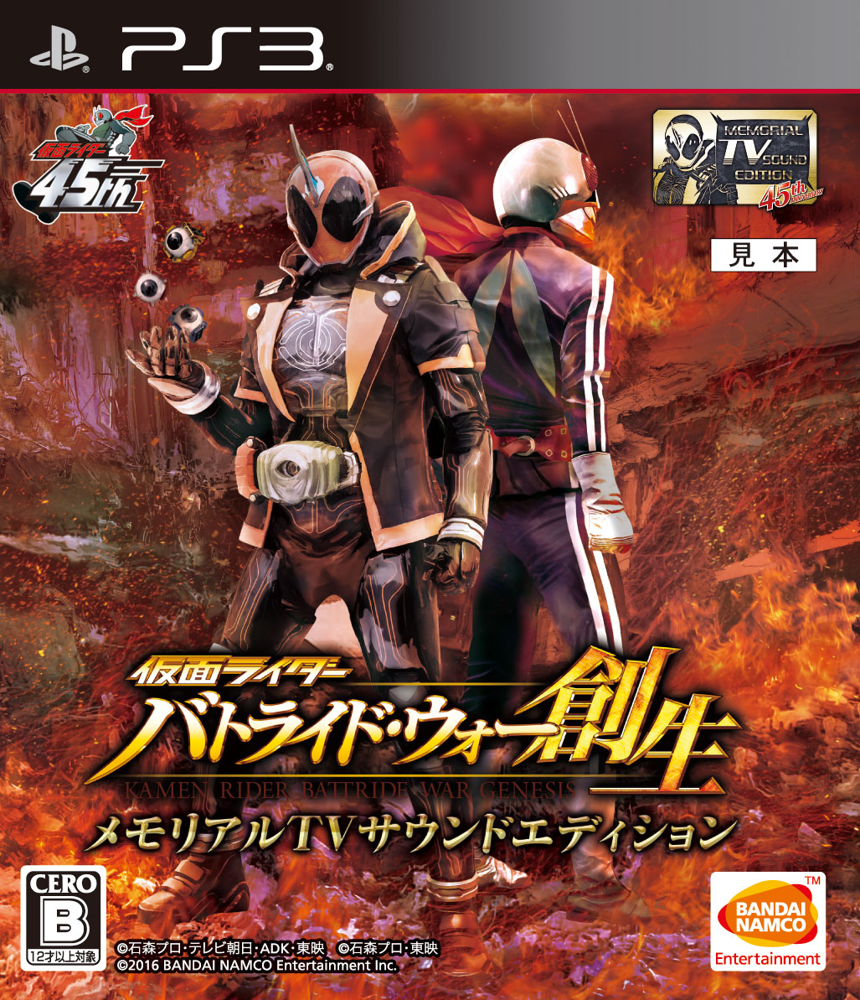

FAN TRANSLATION RELEASE 0.5
가면라이더
배틀라이드 워
창생 한글패치
라이더들의 이야기를, 이제 한국어로.
일본판 BLJS10324 · 메모리얼 TV 사운드 에디션

PUBLIC PATCH
한글패치 다운로드 한글패치 v0.5
ZIP · 1.60 GB · Windows용 패치 도구 포함
패치 파일만 제공합니다. 원본 ISO와 공식 업데이트는 별도로 준비해 주세요.
01 / SCREENSHOTS
한글패치 적용 화면
실제 게임 실행 화면 · 누르면 크게 볼 수 있습니다.
01 / 05메인 메뉴
02 / INSTALL
설치는 네 단계면 됩니다.
패치 작업은 Windows PC에서,
게임 실행은 ARMSX3·RPCSX에서.
- 01
원본 ISO에 한글패치 적용
압축을 모두 풀고
원본 자동 확인 · 여유 공간 5 GB 이상 필요ApplyPatch.exe를 실행하세요. 원본 ISO와 저장 위치를 선택한 뒤 ‘한글 ISO 만들기’를 누르세요. - 02
공식 업데이트 설치
에뮬레이터에 1.02 → 1.03 → 1.04 순서로 설치하세요. 이미 1.04까지 설치했다면 건너뛰세요.
- 03
동봉된 한글 PKG 설치
02_Korean_v0.5_Requires_1.04.pkg를 마지막으로 설치하세요. - 04
한글 ISO를 기기로 옮겨 실행
새로 만들어진 한글 ISO로 게임을 실행하면 됩니다.
03 / CHECK
파일 정보와 도움말
지원하는 원본 ISO 정보 ＋
- 게임 ID
- BLJS10324
- 원본 용량
- 3,844,179,968 바이트
원본 ISO · SHA-256
3181fe4df84be2927b4c11a7ea81844bf0e57683a83fbee63b54f6f08d256ef7패치 도구가 이 해시와 일치하는 원본인지 자동으로 확인합니다.
다운로드한 패치 파일 확인 ＋
Kamen_Rider_Sousei_KO_v0.5_Public_Patch.zip
1,603,225,378 바이트
패치 ZIP · SHA-256
69868e37ab2629057c19835d8037f08c57dd697312a395b121f7410db6ac459c한글이 적용되지 않을 때 ＋
앱을 종료하고 dev_hdd0/game/BLJS10324DATA 폴더 이름을 바꿔 백업한 뒤, 새 한글 ISO로 게임 데이터를 다시 설치하세요.
세이브 폴더(savedata)는 건드리지 마세요.
공식 업데이트를 다시 설치했다면 동봉된 한글 PKG도 마지막에 다시 설치해 주세요.